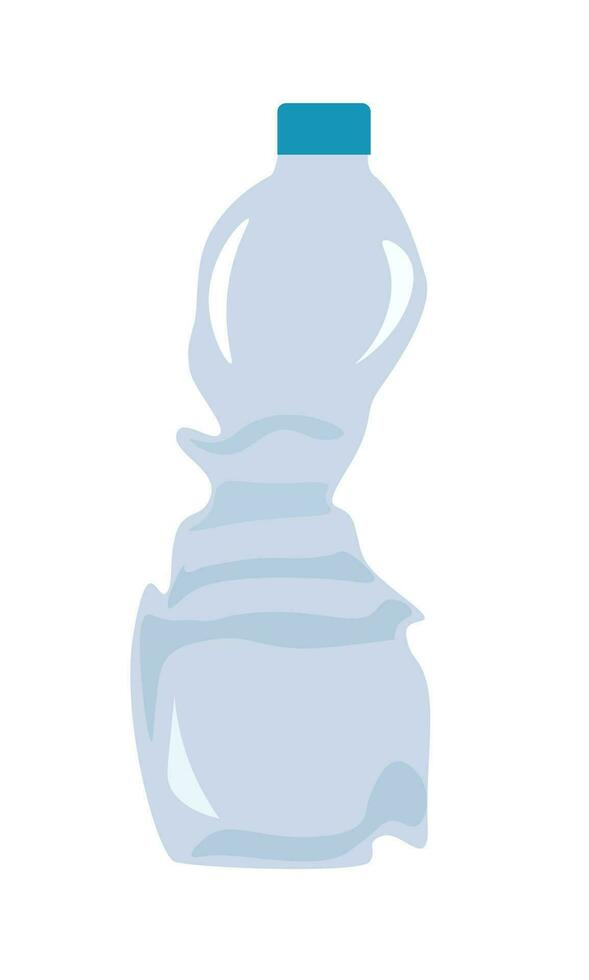

Global Issues

Paragraph 1: global plastic issues.


Introductory paragraph:
Paragraph 1: global plastic issues.


Paragraph 2: plastic issues in the SF Bay Area.
Paragraph 3: initiatives to help.

Short-term initiatives and their effects.

Long-term initiatives and their effects.

A new study from SFEI assessing the ability of rain gardens to remove contaminants from urban stormwater has shown that nature-based filtration may also be a solution for microplastic pollution.

Project descriptions go here.